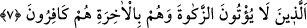
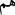

7. Onlar zekâtı vermezler; âhireti inkâr edenler de onlardır.
“Onlar zekâtı vermezler;” yani ne farz olduğuna îman ederler ne de vermeye
yanaşırlar; “âhireti” yani ölümden sonra dirilmeyi ve sevap ve ikâbı “inkâr edenler de
yalnız onlardır, onlar!” İkinci “( ) onlar” zamiri, meramı pekiştirmek için tekrar
edilmiştir. Yani âhirette karşılığını alacaklarına inanmadıklarından dolayı zekât
vermezler, demektir.
“İnkâr edenler de yalnız onlardır” ifâdesi, sılanın alanına dâhil olup “zekât
vermezler” cümlesine mâtuftur. Birincisinin fiil cümlesi olmasına karşılık ikincinin
isim cümlesi olmasının sebebi, zekât vermemelerinin ara sıra ortaya çıkan bir fiil
olmasına karşın, ‘küfür’lerinin hiç kesintiye uğramayan bir şey olmasıdır.
Şâfiî âlimler der ki: Müşriklerin şirklerinden ve zekât vermediklerinden dolayı tehdîd
edilmesi, bir müşrikin şirk koştuğu esnâda bile zekât vermekle mükellef bulunduğunu
gösterir. Şâyet müşrikler mükellef olmamış olsalardı, zekât vermedikleri için söz
konusu tehdide de müstehak olmazlardı. Zekât vermekle mükellef olduklarına göre,
İslâm’ın diğer teklifleriyle de mükelleftirler demektir. Çünkü mükellefiyetler arasında
herhangi bir fark bulunduğunu söyleyen bir âlim yoktur. Buna göre müşrik, tekliflerden
herhangi birisini terketmesi durumunda azâba çarptırılacak demektir. Bizim Iraklı
Hanefî âlimler de bu görüştedir. Ancak bazı âlimler, müşriklerin bu tür emirlerin sadece
‘farz olduğuna inanmak’la mükellef olduklarını; yoksa bizzat yerine getirmekle mükellef
bulunmadıklarını ifâde etmişlerdir. Usûl’de genişçe açıklandığı üzere sadece inanılması
gerekli bir şeye inanmadıkları için cezâya çarptırılacakları görüşünde oldukları ifâde
edilmiştir.
Bizim Hanefî âlimlerimizden müşriklerin -önce müslüman olmak şartıyla- İslamın tâlî
ibadetleri ile de mükellef olduğunu söyleyenler vardır. Tıpkı bir müslümanın önce
abdest almak şartıyla namazla mükellef olması gibi.
Ebussuûd Efendi İrşâdü’l-akli’s-selîm adlı tefsirinde der ki: Cenab-ı Hak zekât
vermemenin ne denli kötü bir eylem olduğunu göstermek ve iyice sakındırıp korkutmak
amacıyla zekât vermemeyi müşriklerin özellikleri arasında saymış; müşrikleri de ‘zekât
vermezler’ diye tavsîf etmiştir. Ayrıca “âhireti inkâr edenler de yalnız onlardır”
buyurarak ‘zekât vermeme’yi, ‘âhireti inkâr’ eylemi ile birlikte zikretmiştir.
Denilir ki: Zekât İslam’ın köprüsüdür; her kim bu köprüyü geçerse kurtuluşa erer, kim
de geçemez ve geri kalırsa helâk olup gider.
İbnü’s-Sâib der ki: Müşrikler de haccederler, umre yaparlar; ancak zekât vermek
sûretiyle mallarını temizlemezlerdi. Bir de inkârcı idiler.
Kâşifî der ki: “Müşriklerin diğer sıfatlarına nazaran zekât vermeye engel olmaları
üzerinde özellikle durulması, insanın malı çok sevmesi ve mal vermenin diğer amellere
göre nefse daha ağır gelmesi sebebiyledir. Bu sıfat onların cimriliğine, insana şefkat